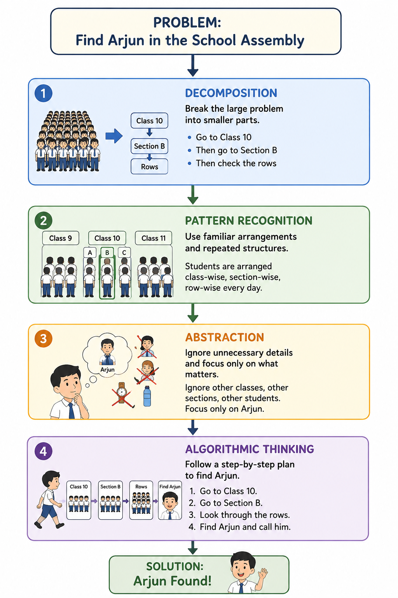

Hello to everyone reading this!
So... Prakhar here (the one writing this). Welcome to this Book-Styled Course, where you'll be READING the content instead of watching it. I know... that probably sounds toooooo old-school in an era dominated by short-form content, but yeah... I guess it is what it is.
There are plenty of reasons why reading is worthwhile (you'll find countless articles on the internet about that), but to sum it all up, reading is (technical term alert!!) an active cognitive process. We'll get into what that actually means a little later. Let's look into a brief on how to read this course.
Reading feels boring! Even when your document has less visual elements. So how one should read? Some people read the highlights of a document (Skimming), some read thoroughly, take breaks, and think. Which one should you do for this course considering you are beginner?
If you're a beginner, I'd recommend the second approach. I have tried to not use any difficult words (Jargon) so just read word by word.
Read one section at a time, and after every example, pause for a moment and ask yourself, "How would I solve this?" before reading the explanation. Don't hesitate to reread a section if something isn't clear—that's completely normal (even I would do that.)
Most importantly, don't rush. This course isn't about finishing quickly; it's about developing a new way of thinking. Read only 1 chapter a day. If a page makes you stop and think, then it's already doing its job.
Every Chapter is followed by a quiz/questionnaire, attend it and don't hesitate to come back. There might be a lot of questions in your mind about reading, for that I will recommend you this short blog by myself @ https://prakharguptaod.github.io
For now, let's start with a simpler question: What is this course about and how will it proceed? It's an interesting question to ask to be honest!
Well, if you're here, you might know that this course is about Computational Thinking. But what exactly is computational thinking? Is it programming? or something else? and why do we even need this? To answer that, let's take a very easy example of school assembly.
Imagine it's Monday morning, and your school has around 2,000 students standing in the assembly. Just before the national anthem begins, your teacher says, "Quick! Go and call Arjun from the assembly."
How would you find him? Would you start from the very first row and check every single student until you found Arjun? Probably not. Instead, your brain would immediately start making a plan.
You might think, "Arjun is in Class 10." So you head straight to the Class 10 section. Then you remember, "He's in Section B." That narrows your search even further. Finally, you recall that Section B usually stands in a particular area, so you begin looking there.. And you know that Arjun is tall (6'2) so he might be standing in the back. (I am jealous of Arjun tbh.. cuz I am short.)
Notice what just happened. Without realizing it, you broke one large problem into several smaller ones. You used what you already knew about how the assembly is organized. You ignored thousands of students who couldn't possibly be Arjun, and you followed a sensible sequence of steps instead of searching randomly.
In just a few seconds, your brain performed four important tasks:
An AI generated flowchart will help you understand this (attached below).

Together, these four ideas form the foundation of Computational Thinking and we will be learning this. Notice that at no point did you write a program or use a computer. That's because computational thinking is not programming.
Programming is the process of telling a computer what to do. Computational thinking is the process of understanding a problem and designing a logical, efficient way to solve it. Whether you're solving the problem yourself, explaining it to a friend, or asking a computer to solve it, the thinking process remains the same.
And that's exactly what this course is about. The table below gives you decent idea of what is the actual difference.
| Computational Thinking | Programming |
|---|---|
| Computational thinking is a problem-solving framework involving decomposition (breaking problems into smaller parts), pattern recognition, abstraction, and algorithmic design. | Programming is the practical act of translating these step-by-step solutions into machine-executable code using a language like Python or C++ |
| Can be done entirely "unplugged" without a computer (e.g., planning an event or mapping out a traffic route). | Strictly requires a computer and a development environment (e.g., writing a Python script to automate data analysis). |
Well, to begin with, you don't need any sort of technical knowledge like programming or
something, neither advanced Maths is required (although I assume you are at least 15 -
16 years old)
That's all for the course orientation!
By now, you know what this course is about, how to approach it, and what you'll need to get started. Remember, this course isn't about memorizing concepts—it's about learning a new way of thinking.
Take your time, stay curious, and don't worry if you don't understand everything on the first read. Learning is a gradual process.
Now that we're all set, answer few questions and close your eyes after that and reflect on what you learned today!
All the best!!!